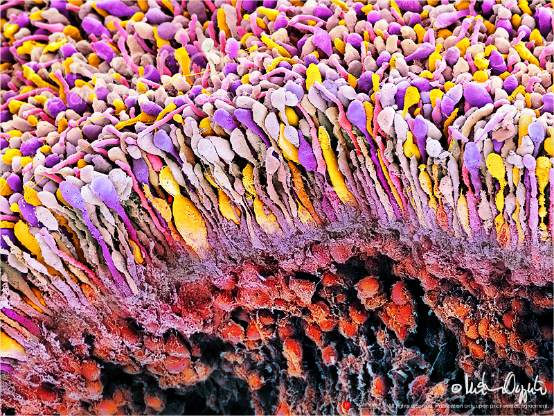
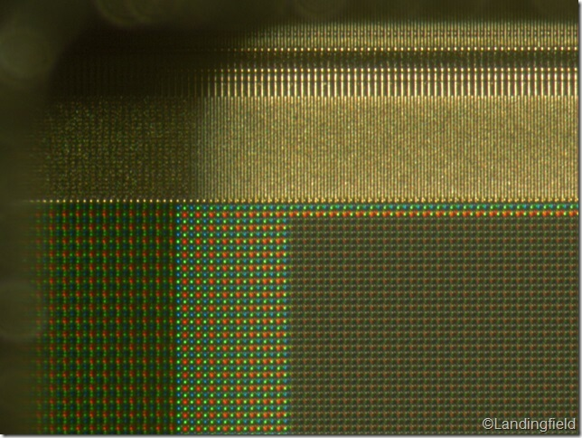
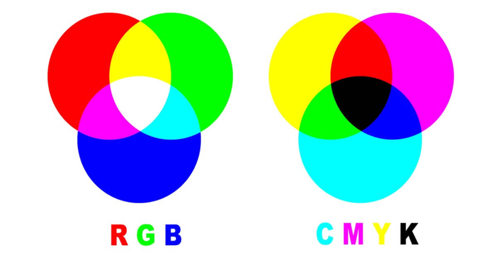
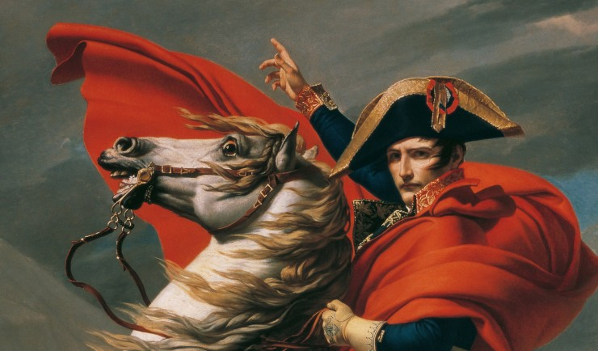
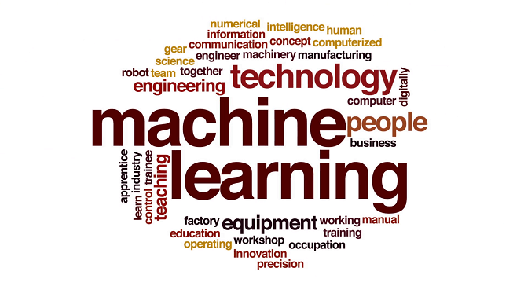
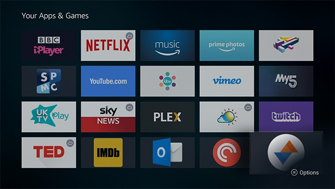
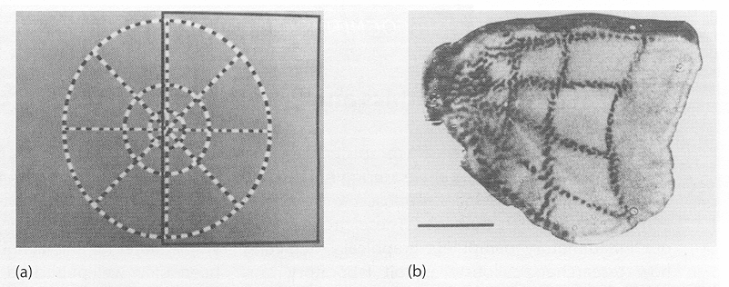
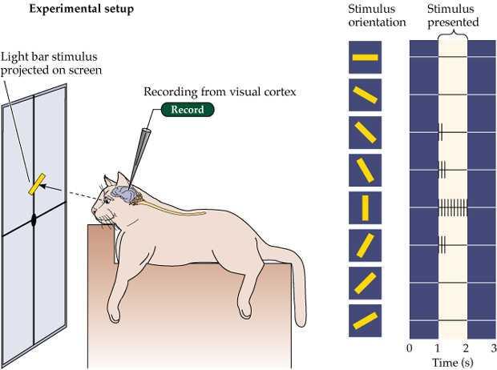
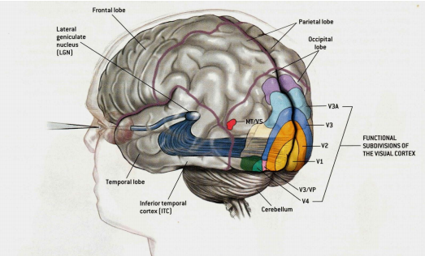

VisionAI Course is going to focus on vision, and concepts we'd learn here can be implemented on any kind of data.
Everything w.r.t vision starts with our eyes. Eye is our vision sensor and similar to our eyes, we have the camera sensor, which reacts to the light based on the amplitude of the wavelength falling over it.
Here is how our physical camera systems look now:
This is how our retina would look under the electron microscope:

this is where what we see gets converted into rgb or bnw! As you are aware, we have 3 channels (they are not purely RGB though)
and this is how our camera sensor would look under the electron-microscope:

CHANNELS
We need to start to think about channels in a different manner now. You are aware of RGB, and probably CMYK as well.

Look at this painting below, and try to see only one color at a time. That is how we need to think about the channels from now on!

While we are at this image, can you try and convince yourself that your eyes "like more" to follow gradients, curves, edges and features in this image, as compared to just plain colors?
Imagine that instead of breaking images into RGB, we divide it into 4 colors. (That's what we do in the newspapers already)
The connection to remember here is CHANNELS
When we think in terms of channels, you can split the song being played above in it's individual components, like sound made by piano, guitar, base, drum, etc.


THE BORED CAT EXPERIMENT
CAT1
CAT2
CAT #1 Experiment Results:

When we see the image on the left, right gets "printed" on our brain!
CAT#2 Experiment Results

Our brain has several edge detectors (along with many other things)!
How do we build complex things?
We start very simple, but then we can mix those simple building blocks to something very beautiful and detailed!
Let's look at this time lapse to appreciate how simple strokes can make something really beautiful!
The connection to remember that very complex things can be built from simple strokes like we can make stories from only 26 alphabets.
Cortex Processing

Happens at the back of our brain. We have 4 core layers.
NEURAL COMPUTING
We need feature extraction methods and then combining methods
Create a New colab notebook in Google Colab(File -> New Notebook)
Refer to the above notebook and run each of the Code-Cell one-at-a-time.
Create a GitHub Repo(name "visionai" and create a file named "Assignment-A.md" under folder "ch01" & submit your response to all the questions from Q1 to Q20 in a GitHub file and push it.
Assignment-B (QnA)
Answer the following question in MAXIMUM 200 words using YOUR OWN words. You can use publicly available figures/images to explain.
What are Channels and Kernels (according to VisionAI course)?
Why should we (nearly) always use 3x3 kernels?
How many times to we need to perform 3x3 convolutions operations to reach close to 1x1 from 199x199 (type each layer output like 199x199 > 197x197...)
What happens during the training of a DNN?
Create a GitHub file named "Assignment-B" under "ch01" folder and write all your answers.